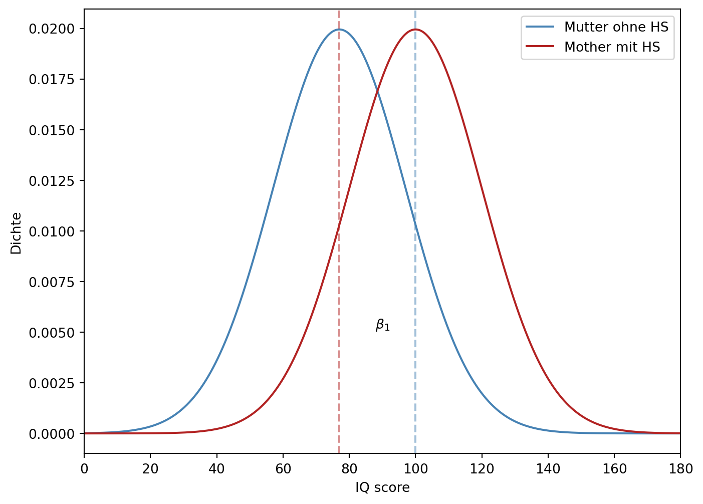

import pandas as pd
kids = pd.read_csv("https://github.com/febse/data/raw/main/econ/childiq.csv")[["kid_score", "mom_hs"]]
kids.head()| kid_score | mom_hs | |
|---|---|---|
| 0 | 65 | 1 |
| 1 | 98 | 1 |
| 2 | 85 | 1 |
| 3 | 83 | 1 |
| 4 | 115 | 1 |
import pandas as pd
kids = pd.read_csv("https://github.com/febse/data/raw/main/econ/childiq.csv")[["kid_score", "mom_hs"]]
kids.head()| kid_score | mom_hs | |
|---|---|---|
| 0 | 65 | 1 |
| 1 | 98 | 1 |
| 2 | 85 | 1 |
| 3 | 83 | 1 |
| 4 | 115 | 1 |
Beschreibung der Variablen in der Datei kids.csv:
kid_score: (numeric) Punkte im IQ-Testmom_hs (numeric): 1 falls die Mutter des Kindes einen High School Abschluss hat, 0 sonstIn dieser Aufgabe werden wir annehmen, dass die Kinder rein zufällig aus allen Kindern im Alter zwischen 3 und 5 Jahren in den USA ausgewählt wurden (zur Zeit der Untersuchung).
Wir möchten die folgende Forschungsfrage untersuchen: Erreichen Kinder, deren Mutter keinen High School Abschluss hat, im Durchschnitt niedrigere IQ-Werte als Kinder, deren Mutter einen High School Abschluss hat?
import seaborn as sns
import matplotlib.pyplot as plt
# Assuming kids is a pandas DataFrame
kids['mom_hs'] = kids['mom_hs'].astype('category')
plt.figure(figsize=(8, 6))
sns.boxplot(x='kid_score', y='mom_hs', data=kids, color='white', width=0.5)
sns.stripplot(x='kid_score', y='mom_hs', data=kids, size=4, jitter=True, color='black')
plt.xlabel('IQ score')
plt.ylabel("Bildung der Mutter")/usr/share/miniconda/envs/econ2024/lib/python3.11/site-packages/seaborn/categorical.py:641: FutureWarning:
The default of observed=False is deprecated and will be changed to True in a future version of pandas. Pass observed=False to retain current behavior or observed=True to adopt the future default and silence this warning.
/usr/share/miniconda/envs/econ2024/lib/python3.11/site-packages/seaborn/_oldcore.py:1119: FutureWarning:
use_inf_as_na option is deprecated and will be removed in a future version. Convert inf values to NaN before operating instead.
/usr/share/miniconda/envs/econ2024/lib/python3.11/site-packages/seaborn/_oldcore.py:1119: FutureWarning:
use_inf_as_na option is deprecated and will be removed in a future version. Convert inf values to NaN before operating instead.
/usr/share/miniconda/envs/econ2024/lib/python3.11/site-packages/seaborn/_oldcore.py:1075: FutureWarning:
When grouping with a length-1 list-like, you will need to pass a length-1 tuple to get_group in a future version of pandas. Pass `(name,)` instead of `name` to silence this warning.
Text(0, 0.5, 'Bildung der Mutter')# Berechnen Sie die durchschnittlichen IQ-Scores für Kinder, deren Mütter einen High-School-Abschluss haben, und für Kinder,
# deren Mütter keinen High-School-Abschluss haben.
Berechnen Sie die Koeffizienten der folgenden Prognosegleichung für den IQ-Wert eines Kindes:
\hat{y} = \beta_0 + \beta_1 \cdot x
wobei y der IQ-Wert des Kindes ist, x die Variable mom_hs und \hat{y} die Prognose für den IQ-Wert ist. Benutzen Sie https://febse.github.io/econ2024-de/03-KQ-Methode.html#%C3%BCbung
\begin{align*} & i = 1,\ldots, n = 434 \text{ observations}\\ & y_i: \text{IQ score} \\ & \hat{y}_i: \text{Predicted IQ score} \\ & x_i \in \{0, 1\}: \text{status of the mother} \end{align*}
y_i = \beta_0 + \beta_1 x_i + e_i, e_i \sim N(0, \sigma^2)
\begin{align*} & y_i \sim N(\mu_i, \sigma^2), \quad i = 1,\ldots,n \\ & \mu_i = \beta_0 + \beta_1 x_i, \quad x_i \in \{0, 1\} \end{align*} \tag{10.1}
\mu_1 = \beta_0 + \beta_1 \cdot 1 \tag{10.2}
Für x = 0
\mu_0 = \beta_0 + \beta_1 \cdot 0 \tag{10.3}
Die Differenz der zwei Gleichungen 10.2 und 10.3 ergibt:
\begin{align*} \beta_0 & = \mu_0 \\ \beta_1 & = \mu_1 - \mu_0 \end{align*}
import numpy as np
import matplotlib.pyplot as plt
from scipy.stats import norm
# Define the range of x
x = np.linspace(0, 180, 1000)
# Calculate the densities of the normal distributions
y1 = norm.pdf(x, loc=77, scale=20)
y2 = norm.pdf(x, loc=100, scale=20)
# Create the plot
plt.figure(figsize=(8, 6))
plt.plot(x, y1, color='steelblue', label='Mutter ohne HS')
plt.plot(x, y2, color='firebrick', label='Mother mit HS')
plt.axvline(x=77, linestyle='--', alpha=0.5, color='firebrick')
plt.axvline(x=100, linestyle='--', alpha=0.5, color='steelblue')
plt.text(90, 0.005, r'$\beta_1$', verticalalignment='bottom', horizontalalignment='center')
plt.xlim([0, 180])
plt.xlabel('IQ score')
plt.ylabel('Dichte')
plt.legend(loc='upper right')